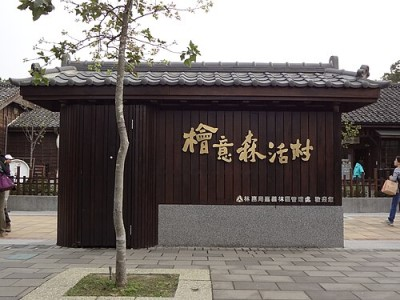
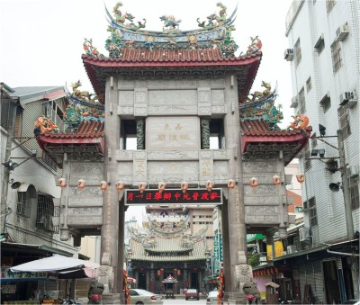

| 檜意森活村 | 北門車站 | 嘉義城隍廟 | |
如果要探索嘉義市的歷史古蹟，有幾個地方是必訪的，像是嘉義城隍廟、檜意森活村以及北門車站，各自代表著不同時代背景，卻共同拼湊出嘉義獨特的城市風貌。整體而言，這三個地點分別代表著嘉義的宗教信仰核心、林業歷史背景與現代文化創意轉型。透過走訪這些地方，不僅能看到不同時期的人留下的痕跡，也能理解嘉義如何在時代變遷中保留傳統，同時發展出屬於自己的文化特色。 |
|
檜意森活村 檜意森活村位於臺灣嘉義市東區，是臺灣第一座以森林為主題的文創園區，園區內以日治時代的檜町，現共和路與林森東路間的29棟歷史建築「嘉義市共和路與北門街林管處國有宿眷舍」以及市定古蹟「嘉義營林俱樂部」構成。占地約3.4公頃，並在忠孝路與林森東路路口設有「農業精品館」。 日治時期的官營林業事業始於阿里山，為了開發阿里山的林業資源，總督府開始興建阿里山森林鐵路，嘉義製材所、營林貯材池與臺灣總督府營林所的職員宿舍等設施。其中，營林所日式宿舍群約興建於大正三年（1914年）至昭和十八年（1943年）間，並分為三至四批陸續興建。其格局規劃錯落有致，主以傳統日式建築構成，此外也設有公共設施以滿足當地居民在生活機能與商業功能的結合要求。 |
 |
北門車站位於台灣嘉義市東區，為林業署阿里山林業鐵路阿里山線之鐵路車站。北門車站最初的站房（當時稱為北門驛）完工啟用於1912年（明治45年），其實際的旅運業務曾一度轉至1973年（民國62年）啟用的站房。1998年舊站被指定為嘉義市市定古蹟。 1899年時，日本人在阿里山地區發現了大面積的森林，因此開始研擬採伐計畫，其中包含阿里山鐵道的修築。1910年10月1日，嘉義至竹頭崎之間的路段通車，阿里山鐵道開始局部營運，而北門驛也在當年完成啟用。與當時鐵路沿線上的其他車站有點不同的是，北門車站並不只是一般的車站而已，它與嘉義車站分別構成一面積非常廣大的木材專業區之東界與西界，附近設有包括營林所、貯木池、製材場之類與伐木有關的設施，以及負責車輛維修調度的北門修理工廠。 |
 |
嘉義城隍廟，是奉祀嘉義縣城隍綏靖侯的道教廟宇，位於臺灣嘉義市東區，於清治時期在台灣府諸羅縣官府最初創建的城隍廟，也是諸羅城的三大古廟之一，也是見證嘉義地方歷史以及文化信仰中心，目前列屬國定古蹟。 清朝同治元年（1862年）間發生戴萬生之役，戴軍舉眾圍攻諸羅城三次，眼看諸羅城就要攻破了，整個諸羅城人心惶惶，知縣白鸞卿到城隍廟請示城隍爺由知縣抽籤詩，城隍爺蒙示全句籤詩：「閤家人安泰，名利兩興昌，出外皆大吉，有禍不成殃」，由知縣解讀籤詩，告訴全城人民「有禍不城殃」，使得人心遂定保住全城。此事於同治十三年由欽差辦理臺灣海防大臣沈葆楨上奏朝廷因諸羅城隍神有助守城池有功，因此在光緒元年（1875年），德宗皇帝敕封諸羅城隍尊神加封號曰「綏靖」，（縣城隍）顯佑伯被加封為（州城隍）綏靖侯，是當時台灣府各縣級城隍中唯一敕封尊號的神祇。 |
 |